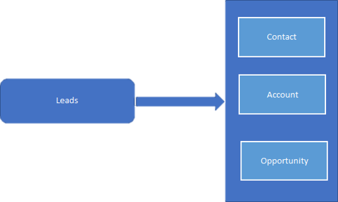
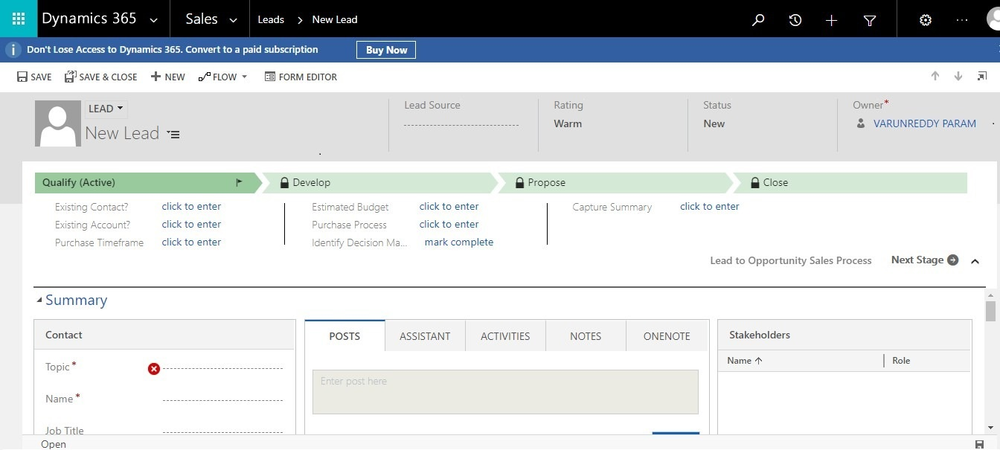
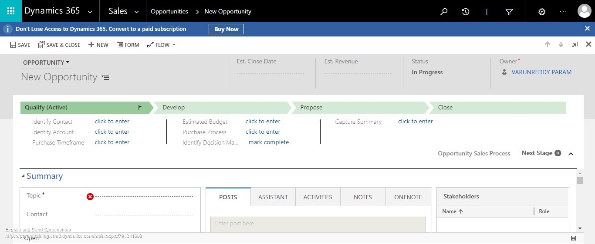
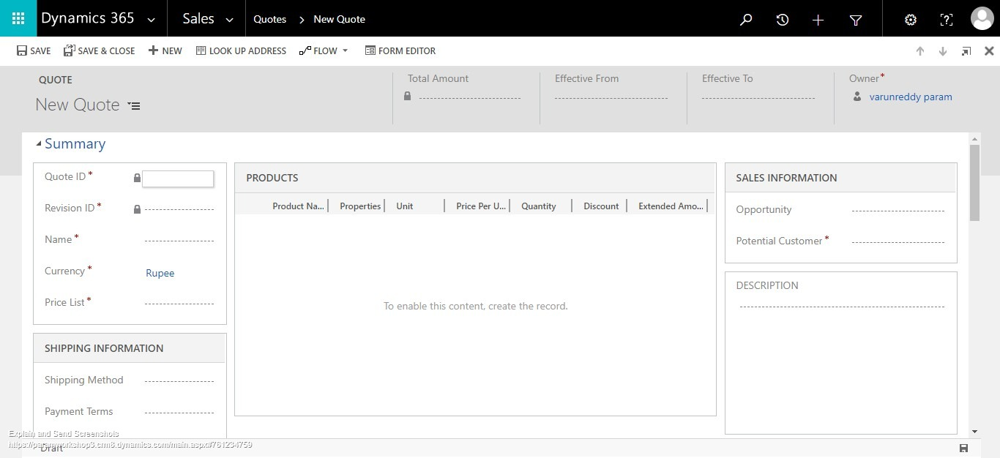
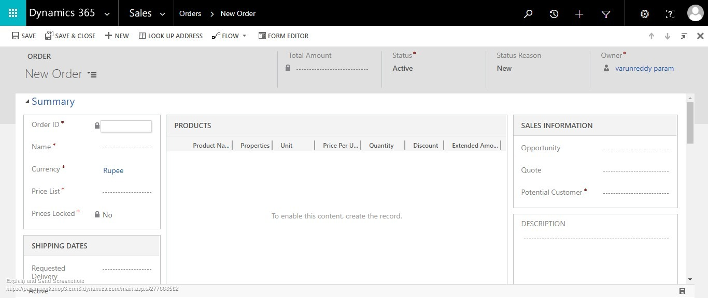
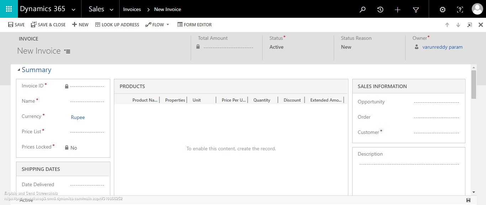
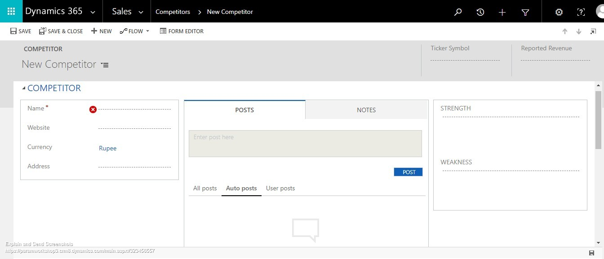
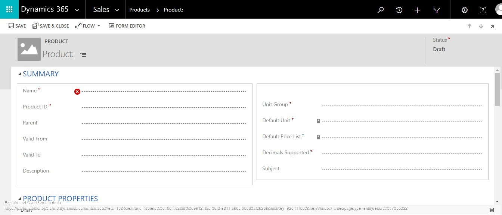

1. The Dynamics CRM Application structure

We all know CRM is for maintaining the Customer Relationship for a firm. To get a customer for the products or services offered by Organization, we need Sales. In order to increase the Sales, Marketing is essential and to address the after sales problems/assistance, we need Services.Microsoft Dynamics CRM offers these three important modules Sales, Marketing and Services.
Let's talk about the Sales module and what it offers in Dynamics CRM.
When you click on the menu button, modules tab will be listed as shown in the below picture. Further click on the Sales tab. All the sub-modules relating to it will be listed. They can be categorized into shared entities and Sales Specific entities.
1.1 Sales
Here we will talk about the Sales Specific entities.
- Leads
- Opportunities
- Competitors
And some of the Collateral entities that are involved in sales are
- Quotes
- Orders
- Invoices
- Products
- Sales Literature.
Also, there are another set of entities that are working with sales, which helps in managing the sales or Goals and Goal Metrics.
1.1.1 Sales Process in Dynamics CRM
To Drive more sales interactions, there is a pre-defined process that needs to be followed. It takes you through multiple stages, right from creating a lead to closing the sale. You will be able to see the complete history that can be used a reference, if you plan to work with the same customer again in future, or if the customer needs support.
Sales process begins with a Lead – a person who is interested in the products or services offered by your organization. Leads can be automatically generated by Microsoft Dynamics Marketing, or they can come from other sources such as website opt-in pages, email queries, or business cards you gather at trade shows.
| # | Sales Step | Description |
|---|---|---|
| 1 | Qualify | Hurrah!! We got a new Lead in the system. As soon as we get the Lead, we will contact him and send information about our products and services. We further nurture the Lead. Also, we will assess the usage and financial abilities of the Lead to purchase our services/ products. Once we are sure, we will convert the Lead to Opportunity (Lead is Qualified) |
| 2 | Develop | Now we are in the Opportunity. Here we will identify the Stakeholders who will be responsible to buy our products, Competitors who will be having the similar products and who contacted our Opportunity & Sales Team Members who will be working closely with the Customer to propose the best solution. |
| 3 | Propose | After understanding the client requirement, a Quote will be created based on the selected products and services. We will present the Quote to the customer and wait for his confirmation. In this stage adjustments to the Quote can be made. Once proposal is accepted by the Customer, we will move it to Invoice and Order. |
| 4 | Close | Once the Invoice and Order is completed, we will close the Opportunity as WON, but in any of the later stages if the Qualified Customer rejects the proposals, we will close the Opportunity as Lost. |
1.2 Lead
Leads are nothing but individuals or an organization interested in the products/ services offered by the Company. This is the place where we maintain the potential customers or prospects that are yet to Qualify.
The below screenshot indicates the Default Lead Form which can be customized as per the business requirements.
Here we track down every communication and transition activity performed for that specific Lead like telephonic conversations, e-mail loops and any external notes that can be stored in Activities associated to the lead.
The process of qualifying and disqualifying is done in Lead Qualification Process. Here the Lead will be nurtured, assessed and then put into Opportunity once the terms are accepted. At the same time demographics of the lead will be copied either to the Contact or/and to the Account. Lead record can be in any of the three states: Open, Qualified and Disqualified.
Lead can be disqualified for many reasons. By default, when we disqualify the lead the following options will be listed - Lost, Cannot Contact, No Longer Interested, or Cancelled. These can be customized as desired. Disqualified reasons can be stored in activity entity. Disqualified lead can be reactivated any time giving us the opportunity to see the record history and the reasons for disqualification.
1.3 Opportunity
Once the Lead is qualified, a new record will be created in the Opportunity for driving the sales for newly qualified customer. For the existing customer, Opportunity can be created either directly or thru campaign responses, e-mails received. This is the place where sales people keep track of their on-going engagements and forecast the sale of services or products.
Also, Opportunity will be associated to the Contact and Account. The major difference between Lead and Opportunity is the former one will create Contact and Account whereas the later one is created from the existing contact or account. So, this stage is called Develop.
In this stage the Sales people develop the opportunity by generating quotes on the selected products and Services. You can see the estimated Revenue generation based on the sales and on the probability of completing the Opportunity cycle. Association of the Opportunity with Contact and Account will help you identify the potential won and lost business with specific customers.
Status that represent the opportunity are: Open, In Progress, On Hold, Won, Lost, Out-Sold, Cancelled . Processing an Opportunity results in its closure (won/lost). On closing of an opportunity, an opportunity close activity is generated. This activity record stores information such as the reason for closing, closure date and actual revenue. An Opportunity can be associated with Accounts, Contacts, Competitors, Quotes, Orders, and Activities. In addition, you can put notes and store attachments against an open Opportunity as well as related Sales Literature.
To track history of the Opportunity all conversations, email loops and any transactions related to the opportunity will be stored in activities grid. Also, we can identify the Competitors who are working with the same client and allocate additional sales team members to work on the same record.
1.4 Quote
This is the stage we call it as Propose. Here we are going to propose a quotation for the client on the selected Products/Services and the quote can be adjusted multiple times till the sales process progress to Order. Multiple quotes with predetermined price can be generated for a single opportunity, but the payment terms will be independent to the Quote generated.
A typical quote can span through three Stages: Draft, Active or Closed. Draft represents that a Quote is still in “work in progress” . Once the work is completed Quote will be sent to the customer, then the status will be updated to Active . Once the quote is approved or rejected, status of quote will be updated as Closed . Order will be generated if the quote is accepted & closed (Won Quote).
The above screenshot shows a standard New Quote form in Dynamics CRM.
When a Quote is created from the Opportunity, Products and/or Services associated with the opportunity are automatically added to the Quote. Information stored in the Quote includes effective dates, billing addresses and shipping addresses. Other entities that are associated with the Quote are Contact, Account, Competitor, Products and/or Services of the Opportunities. We can track the notes and associated attachments with in the Quote.
1.5 Order
The Order entity is a Quote that has been accepted by a customer. An Order can be created by taking the existing Quote as a reference or independently as a new Order. The below screenshot shows the standard New Order form in Dynamics CRM.
Whatever information is filled in the Quote, same information has to be filled in the Order as it has the same entities associated in the system. From here, Invoice will be generated for the Order.
1.6 Invoice
Just as Orders and Quotes, the Invoice page presents similar information and the ability to associate Products and/or Services to the users. When an Invoice is generated from an Order, all the Order details are pre-populated on the Invoice. They can later be adjusted before marking the Invoice as Paid.
Once the Invoice is completed and paid, the Opportunity will be closed as Won. A Lost Opportunity doesn’t reach the Invoice stage
The below is the screenshot shown for the standard New Invoice Form
1.7 Competitors
Competitor entity will store the details of other organizations who are going to offer the same products as we are. For each opportunity created, identify the competitors and maintain up to date details (product liner items, sales literatures) on the offerings in our product lines. We can even store details like strengths and weaknesses for future use.
The recorded data can be used to take more informed decisions on the Opportunities to increase its potential. Customizations can be done to further categorize the Competitors. For every opportunity, we can associate with more than one competitor information.
The below is the screenshot shown for the standard competitor new Form.
1.8 Products
/>Dynamics CRM allows you to maintain more customizable product catalog with multiple Prices and Discounts. The Product represents an individual Product or Service offered to customers by the organization. Products can be associated with Opportunities, Quotes, Orders, and Service Cases. A product can contain associated sales materials as well as details about competitor offerings.
Product catalog is a collection of products. A Product can have one or more pricing models and discount lists associated. Based on user permissions, Products can be created, updated, disabled, or deleted. It is not recommended to delete any product records because they might be already associated with old Opportunities, Quotes, Orders, and Invoices. Removing them would break the associated records thus losing the track of the data. Always disable the products rather than deleting them.
Let’s talk about the product hierarchy model in Dynamics 365 CRM. Product structure includes Product Families, Product Bundles and (individual) Products.
1.9 Product Families
Product families is a group of products. It classifies and categorize products for more streamlined product management. One can view the family and child product relationships by Hierarchy Visualization feature. Both bundles and individual products can be included in a product family tree
Below is the Hierarchy visualization of Product family and products
1.10 Product Bundles
Products can be grouped as bundles. A Bundle has a group of products sold together usually at a discounted price. But the total cost of each individual product may vary. Bundles are the replacement of previous kit functionality in CRM. For example, bundled products are visible to the salesperson on the opportunity, quote, order or invoices as product line items in the grid. Additionally, the quantities and properties of the bundled products can be edited on the line items but cannot be nested.
One can manage the state of products throughout its lifecycle. Only Active products with valid price lists are available on opportunities, quotes, orders, and invoices.
Sales managers can maintain products as they are being prepared for release. Product status can be any one of these - Draft, Active, Under Revision and Retired. Revised product versioning exists to ensure that existing opportunities, quotes, orders, and invoices are not impacted by products under revision.
Looking at the general view of the products, we can identify which is product, product family and bundles because of the icon specified.
1.10 Product Bundles
Products can be grouped as bundles. A Bundle has a group of products sold together usually at a discounted price. But the total cost of each individual product may vary. Bundles are the replacement of previous kit functionality in CRM. For example, bundled products are visible to the salesperson on the opportunity, quote, order or invoices as product line items in the grid. Additionally, the quantities and properties of the bundled products can be edited on the line items but cannot be nested.
One can manage the state of products throughout its lifecycle. Only Active products with valid price lists are available on opportunities, quotes, orders, and invoices.
Sales managers can maintain products as they are being prepared for release. Product status can be any one of these - Draft, Active, Under Revision and Retired. Revised product versioning exists to ensure that existing opportunities, quotes, orders, and invoices are not impacted by products under revision.
Looking at the general view of the products, we can identify which is product, product family and bundles because of the icon specified.